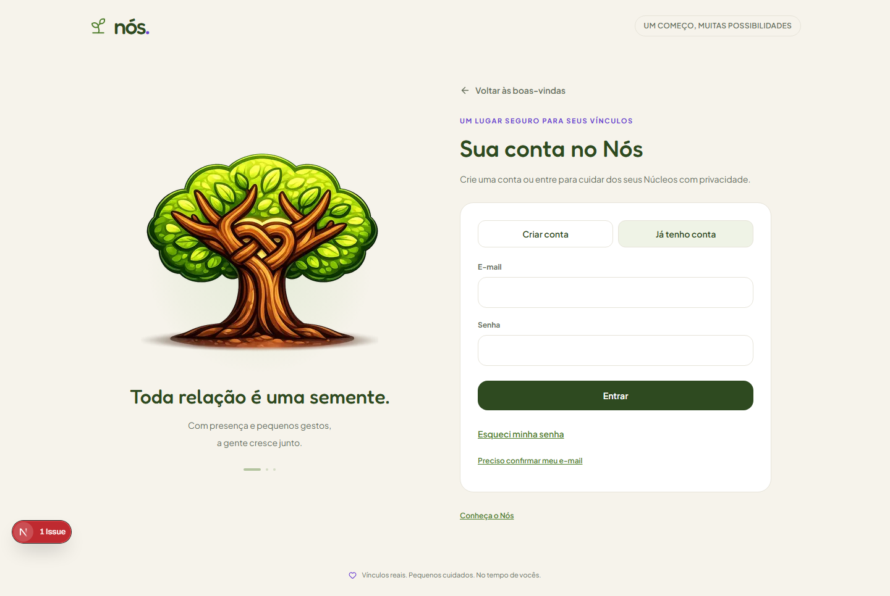
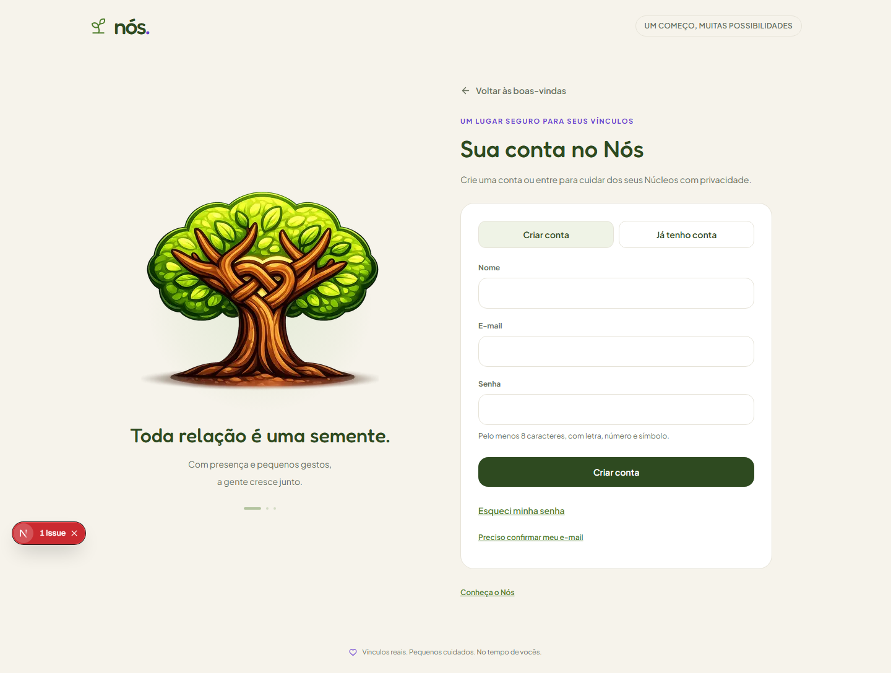
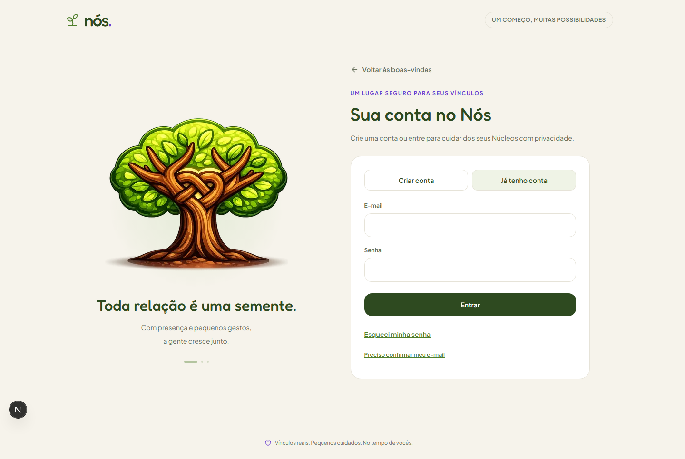
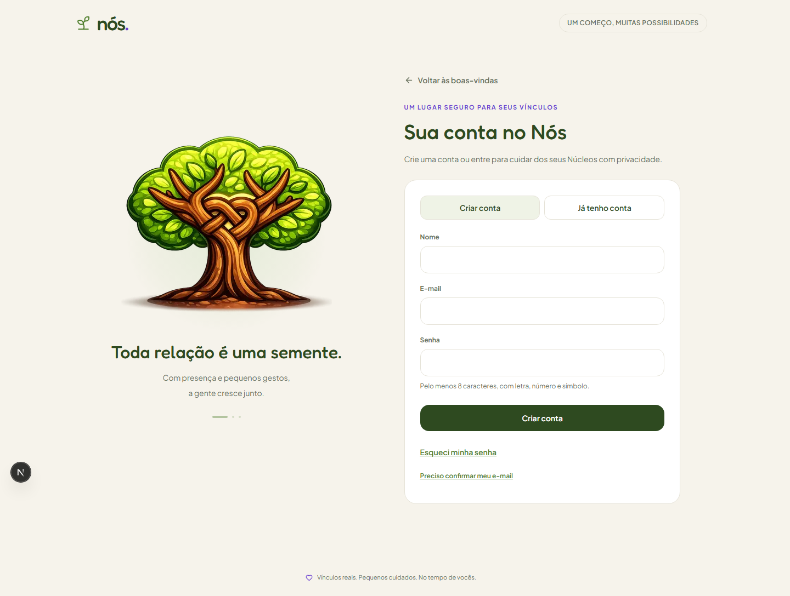
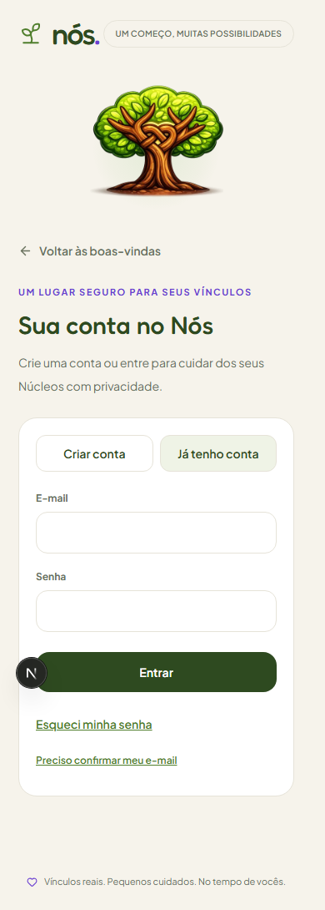
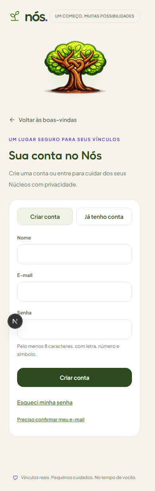
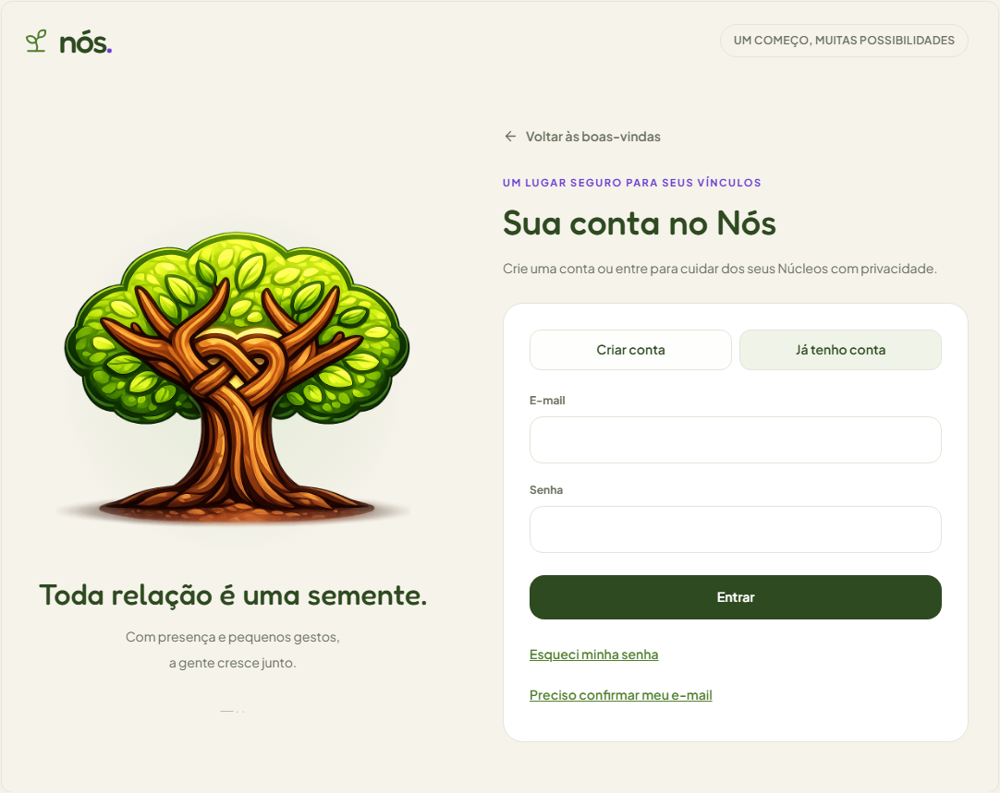
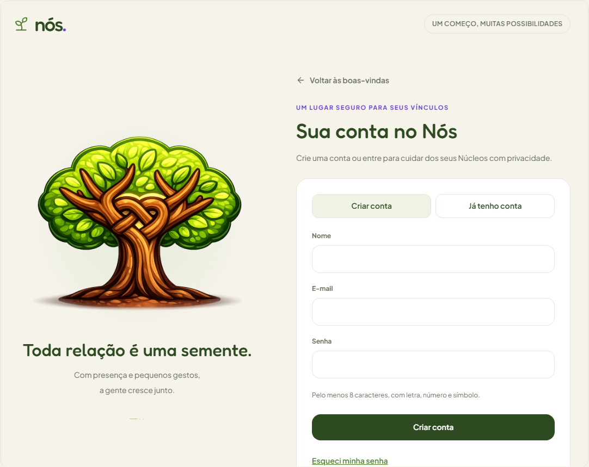

Conta: abas com composição estável — v0.13.1
2026-10-07 · Telas 01/02 · /conta. A árvore e as frases usam o login como referência. Espaço da barra de rolagem reservado; link inferior Conheça o Nós removido. O respiro inferior preserva a composição do login. Sem mudança no contrato de autenticação.
Atlas vivo · Índice das comparações
Antes — aplicativo, 1440×900
Cadastro empurrava a árvore 61px para baixo. Capturas preservadas antes da alteração.
Já tenho conta
Criar conta
Depois — aplicativo, 1440×900
Já tenho conta
Criar conta
Depois — aplicativo, 390×844
A árvore segue o fluxo normal no celular. A frase da coluna lateral permanece oculta conforme o desenho existente. Não há captura anterior móvel nesta galeria.
Já tenho conta
Criar conta
Atlas vivo — depois, desktop
Prévia em quadro de altura limitada, com rolagem interna. Diferenças de escala e recorte são próprias da prévia; conteúdo não representa autenticação real.
Já tenho conta
Criar conta
Medição aprovada nas larguras 320, 390, 768, 1024 e 1440 pixels. Testes da área de Conta: 24/24; tipos e build aprovados. A comparação geral de rotas permanece limitada pelo script antigo que espera /comecar público; a comparação específica de Conta e a Visão global passaram.